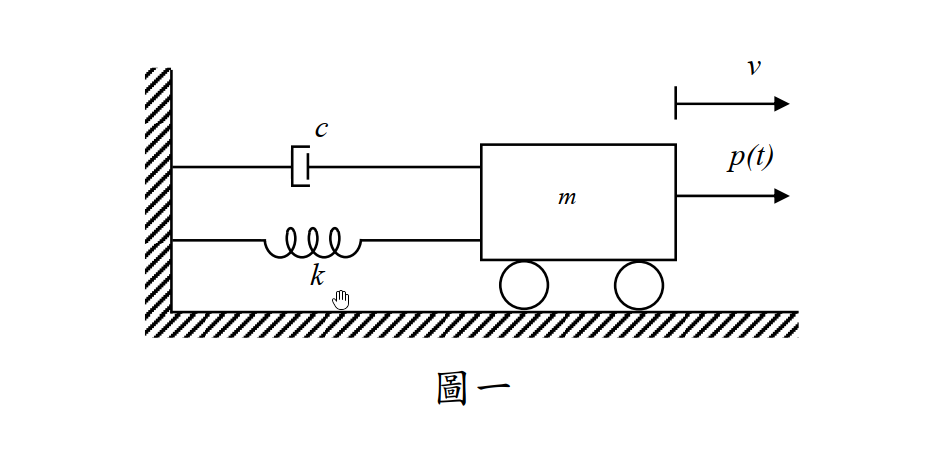

考題編號：SD-2015-1
主分類： SD-U1-3 單自由度、多自由度系統之動態分析及應用
副分類： SD-U1-1 結構動力基本性質及原理
分析方法： SDOF 穩態強迫振動解
標籤： SDOF 穩態振動 特解 頻率比 阻尼比 動力放大因子 相位角 諧振
1. 題目重述
有一單自由度系統如圖一，其運動方程式為：
$$m\ddot{v}(t) + c\dot{v}(t) + kv(t) = P_0\sin\bar{\omega}t$$
只考慮穩態振動（Steady state），忽略暫態振動（Transient state）。試求其解。（25 分）
附圖：

2. 破題思路 (Problem Solving Strategy)
本題是結構動力學中最基礎的「單自由度阻尼系統受諧和外力作用」之穩態反應推導。破題關鍵在於：
- 忽略暫態反應：即只需求解運動方程式的特解 (Particular Solution)，齊次解 (Homogeneous Solution) 因阻尼而衰減，依題意不需考慮。
- 假設特解形式：由於外力為正弦函數 $P_0\sin\bar{\omega}t$，可假設穩態反應包含正弦與餘弦分量 $v(t) = A\cos\bar{\omega}t + B\sin\bar{\omega}t$。
- 無因次參數代換：利用自然頻率 $\omega = \sqrt{k/m}$、阻尼比 $\xi = \frac{c}{2m\omega}$、頻率比 $\beta = \frac{\bar{\omega}}{\omega}$ 將常係數轉化為標準的動力無因次參數，解出係數並合併為振幅與相位角形式。
3. 解題戰略地圖與陷阱分析 (Strategic Roadmap & Trap Analysis)
四大陷阱：
| # | 陷阱 | 正確處理 |
|---|---|---|
| 1 | 混淆暫態與穩態 | 題目明確指出僅求穩態振動，不需解齊次方程式去匹配初始條件。 |
| 2 | 符號與參數定義不清 | 必須清楚定義 $\omega$、$\xi$、$\beta$ 等參數，否則推導過程會非常冗長且易出錯。 |
| 3 | 特解假設不完整 | 若只假設 $v(t) = C\sin\bar{\omega}t$，會因為阻尼項 $c\dot{v}(t)$ 產生 $\cos$ 項而無法平衡。必須同時包含 $\sin$ 與 $\cos$ 項，或直接假設為 $v(t) = \rho\sin(\bar{\omega}t-\theta)$。 |
3.5 變數層次分析（Variable Hierarchy Analysis）
複習提示：第一次解題後，在每個卡住的知識點旁標記
⚠；第二次複習時只看有⚠的項目。
最終目標
[推導出穩態特解的振幅 ρ 與相位角 θ]
本題關鍵公式（依計算順序）
$\boxed{\cdot}$ = 需由前步驟推導，非題目直接給定的變數
$$\text{Step 1: } \omega = \sqrt{\frac{k}{m}}, \quad \xi = \frac{c}{2m\boxed{\omega}}, \quad \beta = \frac{\bar{\omega}}{\boxed{\omega}}$$
$$\text{Step 2: } v_p(t) = A\cos\bar{\omega}t + B\sin\bar{\omega}t$$
$$\text{Step 3: } \boxed{A} = -\frac{P_0}{k} \frac{2\boxed{\xi}\boxed{\beta}}{(1-\boxed{\beta}^2)^2 + (2\boxed{\xi}\boxed{\beta})^2}, \quad \boxed{B} = \frac{P_0}{k} \frac{1-\boxed{\beta}^2}{(1-\boxed{\beta}^2)^2 + (2\boxed{\xi}\boxed{\beta})^2}$$
$$\text{Step 4: } \rho = \sqrt{\boxed{A}^2 + \boxed{B}^2}, \quad \tan\theta = \frac{-\boxed{A}}{\boxed{B}}$$
L1：題目直接給定
看到題目就能讀出的數字或符號，不需要任何公式。
| 符號 | 數值/參數 | 說明 |
|---|---|---|
| $m$ | $m$ | 系統質量 |
| $c$ | $c$ | 系統阻尼係數 |
| $k$ | $k$ | 系統彈簧勁度 |
| $P_0$ | $P_0$ | 諧和外力振幅 |
| $\bar{\omega}$ | $\bar{\omega}$ | 諧和外力激振頻率 |
L2：需知識點推導
需要知道公式名稱與適用條件，套入 L1 即可算出。
Step 1：系統無因次參數代換
| 符號 | 公式/來源 | 卡關? |
|---|---|---|
| $\omega$ | $\sqrt{k/m}$ | |
| $\xi$ | $c/(2m\omega)$ | |
| $\beta$ | $\bar{\omega}/\omega$ |
Step 2：特解係數聯立與求解
| 符號 | 公式/來源 | 卡關? |
|---|---|---|
| $A$ | $-B \frac{2\xi\beta}{1-\beta^2}$ （從 $\cos$ 項係數平衡推得） | |
| $B$ | $\frac{P_0}{k} \frac{1-\beta^2}{(1-\beta^2)^2 + (2\xi\beta)^2}$ （從 $\sin$ 項係數平衡推得） |
Step 3：轉換為極座標振幅與相角
| 符號 | 公式/來源 | 卡關? |
|---|---|---|
| $\rho$ | $\sqrt{A^2 + B^2} = \frac{P_0/k}{\sqrt{(1-\beta^2)^2 + (2\xi\beta)^2}}$ | |
| $\theta$ | $\tan^{-1}\left(\frac{-A}{B}\right) = \tan^{-1}\left(\frac{2\xi\beta}{1-\beta^2}\right)$ |
L3：深層知識（不懂就卡住）
L2 中某些公式本身需要背景概念才能正確應用的知識點。
| 知識點 | 說明 | 卡關? |
|---|---|---|
| 特解假設形式 | 為何假設特解時必須同時包含 $\sin$ 與 $\cos$？因為系統存在阻尼 $c\dot{v}$，對 $\sin$ 微分會產生 $\cos$，若不包含 $\cos$ 則無法平衡方程式。 | |
| 無因次化技巧 | 為何要刻意提出 $k$ 並換成 $\xi$ 與 $\beta$？為了將繁雜的參數簡化為具有物理意義的動力放大因子 $R_d$ 與相位角 $\theta$，這是動力學的標準流程。 |
4. 核心推導與計算過程 (Core Derivations & Calculations)
Step 1：定義動力特性參數
原運動方程式為： $$m\ddot{v}(t) + c\dot{v}(t) + kv(t) = P_0\sin\bar{\omega}t$$ 將等式兩邊同除以 $m$： $$\ddot{v}(t) + \frac{c}{m}\dot{v}(t) + \frac{k}{m}v(t) = \frac{P_0}{m}\sin\bar{\omega}t$$ 代入系統參數 $\omega^2 = \frac{k}{m}$ 及 $\frac{c}{m} = 2\xi\omega$： $$\ddot{v}(t) + 2\xi\omega\dot{v}(t) + \omega^2 v(t) = \frac{P_0}{m}\sin\bar{\omega}t$$
Step 2：假設穩態特解
穩態反應即為非齊次常微分方程式的特解 $v_p(t)$。因等式右邊為諧和函數且系統具有阻尼，響應將包含正弦與餘弦分量，故假設： $$v(t) = A\cos\bar{\omega}t + B\sin\bar{\omega}t$$ 對其微分可得速度與加速度： $$\dot{v}(t) = -A\bar{\omega}\sin\bar{\omega}t + B\bar{\omega}\cos\bar{\omega}t$$ $$\ddot{v}(t) = -A\bar{\omega}^2\cos\bar{\omega}t - B\bar{\omega}^2\sin\bar{\omega}t$$
Step 3：代入運動方程式並整理
將 $v, \dot{v}, \ddot{v}$ 代回原方程式： $$m(-A\bar{\omega}^2\cos\bar{\omega}t - B\bar{\omega}^2\sin\bar{\omega}t) + c(-A\bar{\omega}\sin\bar{\omega}t + B\bar{\omega}\cos\bar{\omega}t) + k(A\cos\bar{\omega}t + B\sin\bar{\omega}t) = P_0\sin\bar{\omega}t$$
將含有 $\cos\bar{\omega}t$ 與 $\sin\bar{\omega}t$ 的項分別合併比較係數：
對於 $\cos\bar{\omega}t$ 項（等式右邊係數為 0）： $$-mA\bar{\omega}^2 + cB\bar{\omega} + kA = 0 \implies A(k - m\bar{\omega}^2) + B(c\bar{\omega}) = 0$$
對於 $\sin\bar{\omega}t$ 項（等式右邊係數為 $P_0$）： $$-mB\bar{\omega}^2 - cA\bar{\omega} + kB = P_0 \implies -A(c\bar{\omega}) + B(k - m\bar{\omega}^2) = P_0$$
Step 4：導入頻率比並求解 A 與 B
提出靜力勁度 $k$，並引入頻率比 $\beta = \frac{\bar{\omega}}{\omega}$：
- $k - m\bar{\omega}^2 = k(1 - \frac{m\bar{\omega}^2}{k}) = k(1 - \frac{\bar{\omega}^2}{\omega^2}) = k(1 - \beta^2)$
- $c\bar{\omega} = c\omega\beta = (2\xi m\omega)\omega\beta = 2\xi k \beta$
代回方程式組得： $$A \cdot k(1-\beta^2) + B \cdot 2\xi k\beta = 0$$ $$-A \cdot 2\xi k\beta + B \cdot k(1-\beta^2) = P_0$$
將等式同除以 $k$： $$A(1-\beta^2) + B(2\xi\beta) = 0 \quad \text{--- (1)}$$ $$-A(2\xi\beta) + B(1-\beta^2) = \frac{P_0}{k} \quad \text{--- (2)}$$
由 (1) 式可得 $A = -B \frac{2\xi\beta}{1-\beta^2}$，代入 (2) 式： $$-\left(-B \frac{2\xi\beta}{1-\beta^2}\right)(2\xi\beta) + B(1-\beta^2) = \frac{P_0}{k}$$ $$B \left[ \frac{(2\xi\beta)^2}{1-\beta^2} + \frac{(1-\beta^2)^2}{1-\beta^2} \right] = \frac{P_0}{k}$$ $$B = \frac{P_0}{k} \frac{1-\beta^2}{(1-\beta^2)^2 + (2\xi\beta)^2}$$
將 $B$ 代回求 $A$： $$A = -\frac{P_0}{k} \frac{2\xi\beta}{(1-\beta^2)^2 + (2\xi\beta)^2}$$
Step 5：化簡為振幅與相角形式 (極座標式)
穩態解可表示為： $$v(t) = \frac{P_0}{k} \frac{1}{(1-\beta^2)^2 + (2\xi\beta)^2} \left[ -2\xi\beta\cos\bar{\omega}t + (1-\beta^2)\sin\bar{\omega}t \right]$$
若令振幅 $\rho = \sqrt{A^2 + B^2}$： $$\rho = \frac{P_0}{k} \frac{\sqrt{(-2\xi\beta)^2 + (1-\beta^2)^2}}{(1-\beta^2)^2 + (2\xi\beta)^2} = \frac{P_0/k}{\sqrt{(1-\beta^2)^2 + (2\xi\beta)^2}}$$
定義相位角 $\theta$，使得 $A = -\rho\sin\theta$ 及 $B = \rho\cos\theta$： $$\tan\theta = \frac{-A}{B} = \frac{2\xi\beta}{1-\beta^2}$$
最終可將穩態解寫作較簡潔的相角形式： $$v(t) = \rho\sin(\bar{\omega}t - \theta)$$
5. 結論與考點覆盤 (Conclusion & Review)
本題求得之穩態振動位移（特解）為： $$v(t) = \rho\sin(\bar{\omega}t - \theta)$$
其中：
- 靜位移：$(v_{st})_0 = \frac{P_0}{k}$
- 動力放大因子：$R_d = \frac{1}{\sqrt{(1-\beta^2)^2 + (2\xi\beta)^2}}$
- 穩態振幅：$\rho = (v_{st})_0 \cdot R_d$
- 相位角：$\theta = \tan^{-1}\left(\frac{2\xi\beta}{1-\beta^2}\right)$